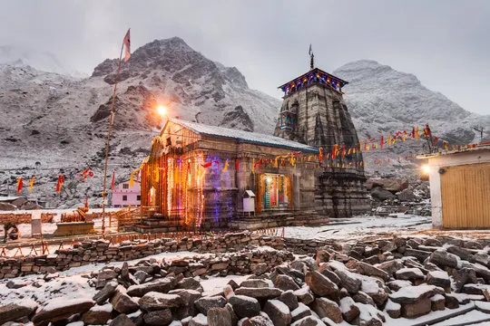

Places to visit
Uttarakhand has various visitor attractions including within the city.
Uttarakhand

Nainital
NainitalSituated at the Kumaon foothills of Himalayas, Nainital is a beautiful hill station in Uttarakhand. It is one of the most popular hill stations in India and among the must-include places in Uttarakhand tour packages. It is about 278 km from Dehradun, and 294 km from Delhi.Nainital is famous for its scenic mountain views and is commonly known as the Lake District of India. Situated at an altitude of 1938 m, Nainital derives its name from Naini Lake, among the must include places in your Nainital holiday packages. Nainital is a famous tourist destination of India, attracting large number of domestic and foreign tourists every year.

Mussoorie
MussoorieAt a distance of 33 km from Dehradun, 187 km from Ambala, 197 km from Chandigarh, 278 km from Delhi, 263 km from Shimla and 310 km from Nainital, Mussoorie is a popular hill station in Dehradun district of Uttarakhand state. This is one of the most popular hill stations in Uttarakhand and also one of the best tourist places near Delhi. Mussoorie is one of the well known tourist destination not to miss in your honeymoon trip.

Haridwar
HaridwarHaridwar, or Hardwar is an ancient religious city in the Haridwar district of Uttarakhand. About 192 km from Chandigarh, and 208 km from Delhi, it is one of the must include places in Uttarakhand tour packages, and among the prominent pilgrimage sites near Delhi.Situated on the banks of the River Ganges, Haridwar, literally translated as Gateway to God, is one of the seven holiest places for Hindus. It is the place where the river Ganga descends to the plains. It serves as a gateway to the Char Dham destinations of Uttarakhand which are Badrinath, Kedarnath, Gangotri, and Yamunotri. Haridwar is also one of the well known places to visit near Chandigarh.

Rishikesh
RishikeshLocated at the foothills of the Himalayas, Rishikesh is a holy city on the banks of the River Ganges in Uttarakhand. It is one of the top pilgrimage sites near Delhi, and among the prominent places to visit in Uttarakhand. It is about 42 km from Dehradun, 201 km from Chandigarh, and 233 km from Delhi.Rishikesh is the gateway to the upper Garhwal region and the starting point for the Char Dham pilgrimage (Gangotri, Yamunotri, Badrinath, and Kedarnath).
Corbett National park
Corbett National parkCorbett National Park was established in 1936 as Hailey National Park. After India's independence the park was named as Ramganga National Park but later in 1956, it was renamed after Jim Corbett - the famous hunter turned conservationist and author, who played a major role in the establishment of the national park. The area came under Project Tiger in 1973. Spread over an area of about 520 sq. km, out of which 330 sq. km forms the core area. Owing to its location in the Himalayan low lands, many streams flow through the park, supporting the diverse vegetation. The altitude of this park ranges from 360 m to 1,040 m. Jim Corbett National Park is among the must include place in your Nainital tour package.
Almora
Almora is located on a 5 km long horse shoe shaped ridge, the eastern portion of which is called the Talifat and the western one is known as Selifat. The Kosi and Suyal rivers run alongside the town adding to the beauty of the place. Almora is considered the cultural heart of the Kumaon region of Uttarakhand. The town got its name from kilmora, a short plant found in nearby region, which was used for washing the utensils of Katarmal Temple. The people bringing kilmora were called Kilmori and later Almori and the place came to be known as Almora. Almora is one of the top attractions you must include in Nainital packages.

Badrinath
BadrinathBadrinath is the most important of the four sites of famous Char Dham pilgrimage; the other three being Puri, Dwarka and Rameshwaram. It is also visited as part of Chota Char Dham Pilgrimage along with Kedarnath, Yamunotri and Gangotri in Himalayan region of Uttarakhand. Surrounded by Nar and Narayana mountain ranges and the Nilkantha peak, Badrinath has great mythical significance. This holy town is mentioned as Badari or Badarikashram in many ancient texts and scriptures. According to the epic Mahabharata, Badrinath is the site where Nara and Narayana, the dual forms of Vishnu, did meditation. It is also believed that the Pandavas passed through Badrinath on their way to heaven. Legend has it that Sage Vyasa authored Mahabharata at a cave in Mana, which is about 4 km from Badrinath

Kedarnath
KedarnathKedarnath is a popular pilgrimage destination for Hindus and is one of the four major Places to visit in Uttarakhand known as Chota Char Dham pilgrimage that also includes Badrinath, Gangotri and Yamunotri. It lies at an altitude of 3584 m near Chorabari Glacier, the head of river Mandakini. It is the most remote of the four Char Dham sites and is flanked by breathtaking snow-clad peaks.
Auli
AuliAuli, also known as Auli Bugyal which means meadow in Garhwali, is located at an average altitude of 2800 m in the Garhwal Himalayas. Earlier, Auli was a prominent trade centre and the trails of Auli were frequently traversed by the semi-nomadic Bhotiya tribes who maintained barter trading with Tibet for centuries. According to legend, the revered Guru Adi Shankaracharya visited Auli during 8th century AD. He built a math at Joshimath, which still is intact and is known by the name Shankaracharya Tapastali.
Gangotri
GangotriGangotri, the origin of the River Ganges, is one of the four sites in the Chota Char Dham pilgrimage circuit along with Badrinath, Kedarnath and Yamunotri. River Ganges originates at Gaumukh in Gangotri Glacier, which is located about 19 km away from Gangotri town. As per legends, Goddess Ganges took the form of a river in order to absolve the sins of King Bhagiratha's ancestors, after his severe penance. Lord Shiva received River Ganges in his thick hair locks, to reduce the impact of her fierce flow.